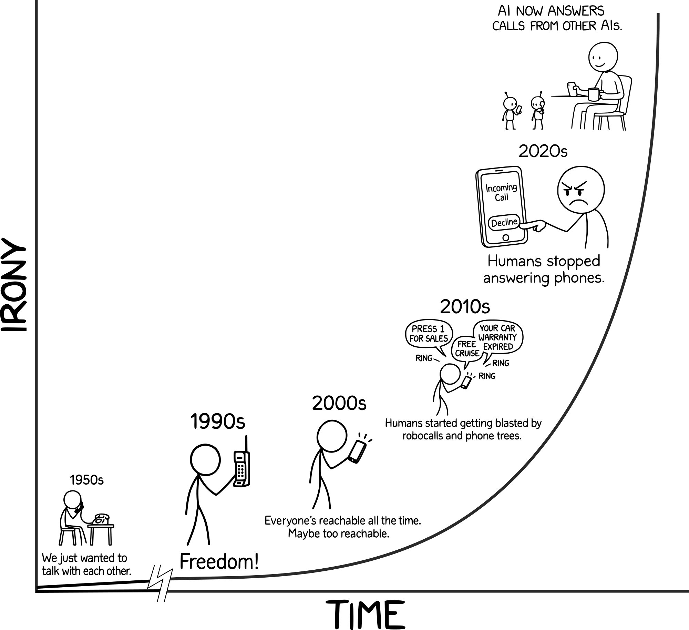

Peak Irony: We Need AI to Answer AI Calls So Humans Can Finally Talk
Isn't it ironic? We are now at the point where we can use AI assistants to deal with the previous generation of annoying bots.
AI-Receptionist.com was born out of frustration—the kind that only small-business owners understand. My family has run small businesses for generations. I grew up surrounded by ringing phones, carbon copy invoices, and the smell of printer toner. I remember the excitement of each "revolutionary" technology: the first personal computers, the first fax machine, the first email, and of course, the rise of the Internet and smartphones.
Each breakthrough felt magical. When faxes arrived, it transformed my parents' furniture business overnight. Fast-forward a few years, and that same magic became a nightmare—stacks of curling, unfiled paper that nobody wanted to touch.
The same story played out with the phone. Once upon a time, a long-distance call was a special event. You could talk to someone across the world and the minutes were precious! Today, we're spammed relentlessly by call centers on the other side of that same world. Progress.
The Breaking Point: When Your Business Phone Becomes Your Enemy
In my own business—a niche global operation—our public phone number eventually became a magnet for robo-calls, scammers, and overseas "warranty departments." The phone rang dozens of times a day. Out of all those calls, maybe one was a real customer. The rest were noise—actually worse than noise because answering meant my time was robbed. Time that I needed.
At first, we let voicemail handle it, filtering through the calls at the end of the day to find the ones we needed to talk to. Then we just gave up. The phone never stopped ringing, but we stopped answering. Real clients tried to call and couldn't get through. Some emailed. Others assumed we were a ghost company.
That's the death spiral every small business faces. If you're big enough, you can afford a call-tree system or hire a low-cost human to screen calls. But if you're small, every ring is a gamble—one minute it's a new customer, the next it's "Hello, this is Microsoft Support calling from the Windows Company."
For years, the phone system has been broken for small business. Going public with your number meant drowning in spam. Staying private meant missing real opportunities. There was no middle ground.
The Solution: AI Receptionists and Boss Mode
Until now.
AI has reached a point where it can reason, speak naturally, and filter human intent. That means we can finally automate the gatekeeping part of phone calls—the part humans hate. An AI receptionist can screen the nonsense, route real callers, and make sure your time isn't wasted. It's not just convenient. It's liberating.
And here's the punchline: this is what "peak irony" looks like.
Phones were invented so humans could talk to each other. Then we used them so much that we stopped talking altogether. We built machines to call us, and now we've built machines to answer them—but that's not the whole story.
For decades we've had "answering machines," but those were just polite graveyards for missed calls. Then came voicemail trees, IVRs, and auto-dialers. The machines evolved, and so did the arms race. Marketers built smarter dialers, we built better blockers. They invented robocalls, we invented caller ID. They learned to spoof numbers...and we learned to stop picking up entirely.
The Future of Business Phone Systems: AI Talks to AI
It feel like we are at the end-game, or perhaps more likely at least at the start of a new type of game. The arms race has gone full circle. The bots that pester us will soon be greeted by bots that politely hang up on them—or negotiate, or waste their time right back. AI talks to AI while we, at long last, get to stay focused on real human work and talk with the people we want to.
Maybe that's the greatest irony of all. Technology broke the conversation—and now, with a straight face, it's fixing it. Progress, in perfect symmetry.
Experience Boss Mode and Free Trials at AI-Receptionist.com
At AI-Receptionist.com, we've built our AI phone assistant with features like Boss Mode—allowing you to call in and get verbal briefings about recent activity without logging into a dashboard. It's 24/7 call screening, intelligent spam filtering, multilingual support, and professional call handling that gives small businesses the communication tools they need to compete.
Ready to take back control of your business phone? Start your free trial today and see how AI receptionist technology can transform your customer communication. We also offer free custom demos to show you exactly how our system can work for your specific business needs.
Visit AI-Receptionist.com to learn more about our virtual receptionist service, explore our pricing plans, and discover how Boss Mode and other innovative features can help you stay connected without the stress. Your business phone should work for you, not against you.
---
The Team at ai-receptionist.com